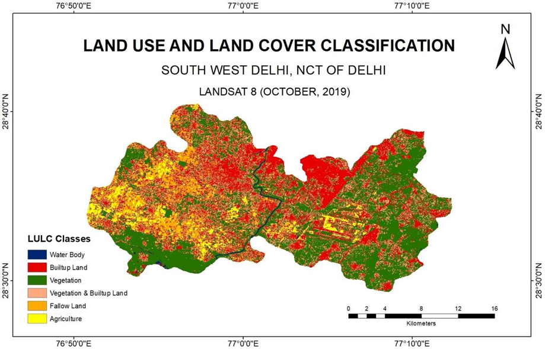

Courses
- Jul–Dec 2026
Principles of GIS and GNSS (NRG176)
MSc Geoinformatics, TERI School of Advanced Studies
4 credits, 60 hours (lecture–tutorial–practical 42–2–32).
- Jul–Dec 2026
Principles of Remote Sensing (NRG169)
MSc Geoinformatics, TERI School of Advanced Studies
4 credits, 60 hours (lecture–tutorial–practical 42–2–32).
- Jul–Dec 2025
Principles of Remote Sensing (NRG169)
MSc Geoinformatics, TERI School of Advanced Studies
Taught the practical component: 32 hours of hands-on lab sessions.
In the lab
Practical sessions take students from the satellite to the map: GPS and GNSS fieldwork, georeferencing, working with Landsat 8 and 9 imagery in ArcGIS Pro and ERDAS Imagine, and applied exercises on urban patterns, vegetation and geomorphology.
